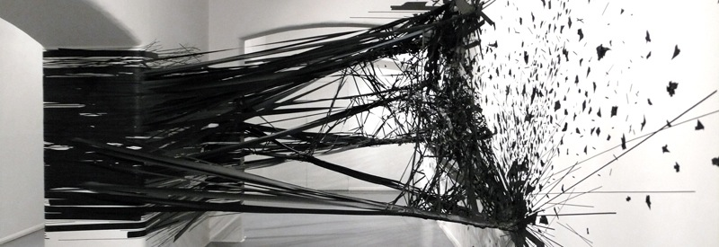

Monika Grzymala’s Raumzeichnung at the Sumarria Lunn Gallery, Mayfair, 2011
Aside from detailing my journey into the depths of CSS and HTML5, I’ve decided to commit myself to talking a bit more about another love in my life, Art. Below are thoughts, feel free to email me with any comments.